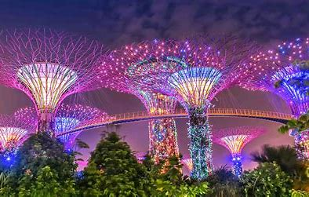

Welcome to Singapore!My Name is Riaan,Today I will tour you to different places of interest in Singapore!
Gardens By the Bay

Thing you can do at gardens by the bay
- Walk among the Supertree Grove
- See the Supertree up close on OCBC Skyway.
- Experience the Garden Rhapsody light and music show.
- Visit the Flower Dome.
Fun facts you did not know about Garden's By the bay
There was an international competition for the design of the Gardens by the Bay
The Gardens by the Bay have horticultural themed gardens
Gardens by the Bay represents the national flower
Each of the SuperTree Grove is a garden
The Flower Dome in the Gardens by the Bay is the largest greenhouse in the world
Gardens By The Bay Virtual Tour!